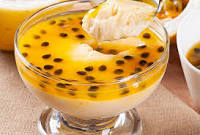

mousse de maracuja

Ingredientes:
- 2 maracuja
- 2 lata de leite condensado
- 2 lata de creme de leite
Modo de Preparo:
- Em um liquidificador coloque 2 lata de creme de leite e 2 lata de leite condensado
bata por 2 minutos
coloque a poupa de um maracuja bate por mais 2 minutos
adicione o outro bate por 2 minutos
leve para geladeira e espere por duas horas